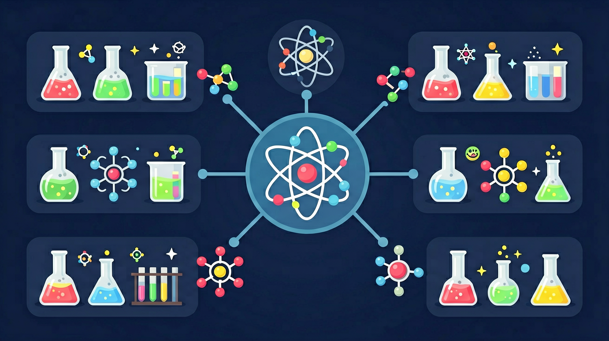

❓ 为什么原子这么小还能组成所有东西？
❓ 电子绕原子核转为什么不会掉下来？
❓ 同位素为啥化学性质一样但质量不同？
学完这一课，这些问题你都能自信地回答。

你知道物质由原子组成 · 但不知道原子内部长什么样 · 卢瑟福模型告诉我们：原子=核外电子+原子核（质子+中子）
说出原子的构成：质子、中子、电子
能解释原子序数、质量数与粒子数的关系
能根据元素符号确定原子各粒子数
¹²C 中，质子数:中子数:电子数=？
已知：你知道物质由原子组成
问题：但不知道原子内部长什么样
解法：卢瑟福模型告诉我们：原子=核外电子+原子核（质子+中子）
互动类型：atom_builder
某原子质量数=23，质子数=11，则中子数=？
有疑问？点击提问！
在真实的在线仿真中探索原子结构（需要网络连接）：
🔬 打开 PhET 仿真先独立作答，再点选项查看对错与错因。
下列哪个粒子位于原子核内部？
原子中电子的分布主要影响什么？
下列哪个元素的中子数最多？
原子核由____和____组成。
答案：质子 中子
原子核由带正电的质子和不带电的中子组成。
电子的质量相对于质子和中子可以____。
答案：忽略不计
电子的质量远小于质子和中子，通常可以忽略不计。
下列哪项正确描述了原子的结构？
通过实验观察不同元素的原子光谱，分析原子结构与元素性质的关系。
用PhET仿真拆解原子核与电子层结构
质子数决定元素种类，电子排布决定化学性质
对比氢、氧、铁原子结构的异同
通过云室照片观察粒子运动轨迹
解释核电站铀235与铀238分离原理
✅ 电子在电子层概率出现，无固定路径
💡 将宏观运动规律套用到微观世界
✅ 质量数=质子+中子，相对质量需计算同位素平均值
💡 忽视同位素存在的影响
口诀：质子中子核里住，电子外面高速舞
类比：原子像太阳系，原子核是太阳，电子是行星
And：学生知道物质由微粒构成
But：但难以想象原子实际大小
Therefore：通过对比建立微观尺度概念
原子直径约0.1-0.5纳米（1纳米=十亿分之一米）。比如把1亿个氧原子排成直线，长度才约1厘米，相当于铅笔尖的宽度。原子核更小，如果把原子比作足球场，原子核只有场中央的一粒黄豆大，电子在观众席位置运动。
🌍 PM2.5颗粒直径约2500个原子并列，新冠病毒约100纳米，相当于200个原子排队。用电子显微镜才能看到单个原子。
下列哪个比喻最接近原子实际大小？
And：学生知道元素周期表有编号
But：不理解质子数决定元素种类
Therefore：建立质子数=原子序数=核电荷数的认知
每个原子都有专属的质子数，就像身份证号。例如氢原子有1个质子（原子序数1），氧原子有8个质子（原子序数8）。改变质子数就变成新元素——给碳原子（6个质子）增加1个质子，它就变成氮原子（7个质子）。中子数可以不同，如碳-12有6中子，碳-14有8中子，但都是碳元素。
🌍 医院PET检查用的示踪剂含氟-18（9质子+9中子），会衰变成氧-18（8质子+10中子），质子数改变导致元素转变并释放能量。
钠原子变成镁原子需要改变什么？
同学们有没有想过，科学家是怎么知道原子内部有质子和电子的？这可不是靠猜的！咱们通过一个有趣的实验故事来理解。1909年，卢瑟福用α粒子（氦原子核）轰击金箔，就像用子弹打一张薄纸。你想想，如果原子是均匀的‘葡萄干布丁’模型（当时流行观点），所有α粒子应该直接穿过去对吧？但实验结果吓人一跳：大部分穿过了，少数大角度偏转，甚至有的反弹！这就像你朝棉花糖开枪，子弹居然被弹回来了——说明原子内部有个极小的硬核（原子核）。说白了，这个实验直接推翻了旧模型，确立了核式结构。
生活实例：玩过磁铁吗？两块磁铁同级靠近时会突然弹开，就像α粒子撞上原子核。虽然看不见磁场力，但通过物体的运动变化，我们就能推测微观力的存在——科学家研究原子也是这个思路！
既然原子核带正电，电子带负电，异性相吸嘛，为啥电子不像磁铁吸回形针一样被吸进原子核？这就要提到量子力学的神奇规则了。想象你快速甩动绑着绳子的水桶，水不会洒出来——因为离心力抵消了重力。电子类似，它有‘运动惯性’（动能），但更关键的是电子只能存在于特定轨道，这些轨道就像楼梯台阶，不能停在两级之间。说白了，电子不是‘不想掉下去’，而是‘根本没法掉到更低的轨道’，除非它释放能量‘跳台阶’。
生活实例：游乐场的旋转飞椅就是最好例子！绳子拴着的椅子（电子）受到向内的拉力（原子核吸引力），但快速旋转时（电子运动）会产生向外的趋势，两者平衡就保持稳定高度——这和电子轨道稳定原理异曲同工。
开放任务：用三步写出你如何向同学讲清「原子结构」。